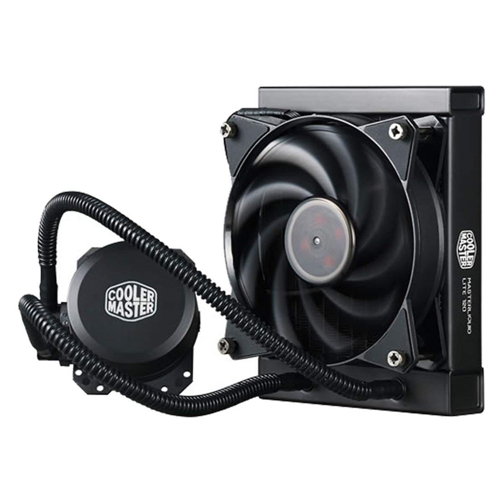

Sıvı soğutması veya su soğutması , suyun yüksek termal iletkenliği nedeniyle bir bilgisayarı soğutmanın en iyi yollarından biridir . Bir sıvı soğutması sistemi su blokları, bir pompa, bir radyatör, borular ve isteğe bağlı olarak bir rezervuardan oluşur. Pompa, sıvı soğutucunun, CPU'ya bağlı olan su bloğu ile radyatör arasında hareket ettirilmesini sağlar. Isı daha sonra bileşenden soğuk sıvıya aktarılır ve bu sıvı sistem boyunca sürekli olarak pompalanır. Su soğutmasında, iki ana seçenek bulunmaktadır: AIO (hepsi bir arada) sıvı soğutması ve özel döngü. AIO soğutucular tek ünite halinde gelmektedir. Dolayısıyla parçaları kendiniz birleştirmek zorunda kalmazsınız. Özel döngü soğutmasında, en iyi performansı ve görünümü elde etmek için soğutma sisteminizin tüm parçalarını özelleştirebilirsiniz. AIO ve özel döngü soğutması, farklı avantajlara ve dezavantajlara sahiptir. Dolayısıyla ikisinin arasındaki farkları biliyor olmanız önemlidir.

1-Gürültü – Sıvı soğutması daha sessiz çalışır , sıvı soğutmalı bir
sistemdeki fanlar hava soğutmalı bir sistemdekilere göre genellikle
daha yavaş ve sessiz dönerler.
2-Performans – Maksimum ayarlarda oyun oynamayı planlayan PC
kullanıcıları su soğutmayı düşünmelidir. Bilgisayarınızı sınırlarına
kadar zorlamak daha fazla güç gerektirir ve bu nedenle sisteminizi
tehlikeli olabilecek bir seviyeye kadar ısıtır. Su soğutması, bu
sıcaklıkları hava soğutmasına kıyasla daha hızlı ve daha etkili
biçimde düşürebilir.
3-Görünüm – Sıvı soğutma sistemleri , makinenizin görsel çekiciliğini
artırmak için RGB öğeleri ekleyebileceğinizden görsel olarak çok
etkileyici olabilir. Özel döngü soğutması, parçaları karıştırıp
eşleştirebileceğiniz ve tamamen benzersiz bir sisteme sahip
olabileceğiniz için çok etkileyici görünebilir.
1-Maliyet – Özel sıvı soğutması , standart bir hava soğutması
sistemine göre çok daha maliyetlidir. Çok daha karmaşık bir çalışma
ve daha iyi performans için daha fazla ödeme yapmanız gerekir. Ancak
AIO soğutma sistemi, hava soğutması sistemine yakın bir fiyata sahip
olacaktır.
2-Kurulum – Özel sıvı soğutmasının kurulumu , özellikle yeni başlayan
bilgisayar toplayıcılar için daha zorlu olabilir. Bir AIO (hepsi bir
arada) sıvı soğutucunun kurulumu daha kolaydır ve 30 dakika gibi bir
zaman gerektirir. Ancak, her ikisinde de sisteminizde suyun
dolaşıyor olması biraz korkutucu olabilir.
3-Bakım– Özel sıvı soğutması sistemleri hava soğutmasından çok daha
fazla bakım gerektirir. Bunun nedeni sıvıyı doğru seviyede tutmanız
ve bileşenlerin temiz ve çalışır durumda odluğundan emin olmanız
gerekmesidir. Aynı zamanda özel soğutma sisteminin parçalarından
herhangi birinin arızalanması bilgisayarınız için bir felaket
olabilir. AIO, daha az bakım gerektirir. Tüm parçalar birleştirilmiş
halde geldiğinden sistem sızıntısı riski daha düşüktür.